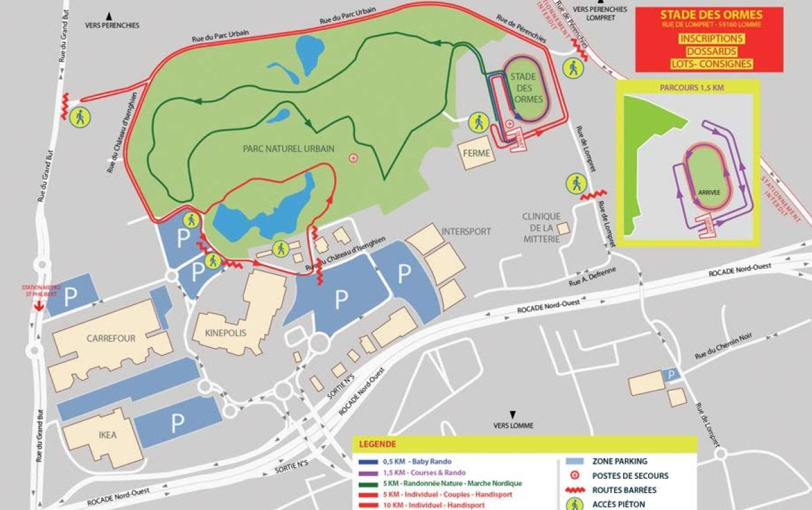
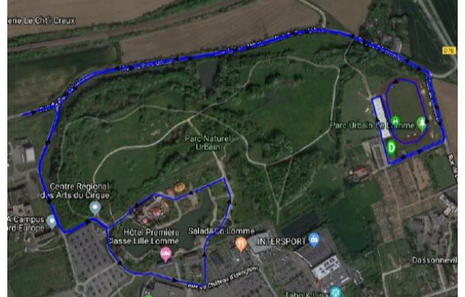
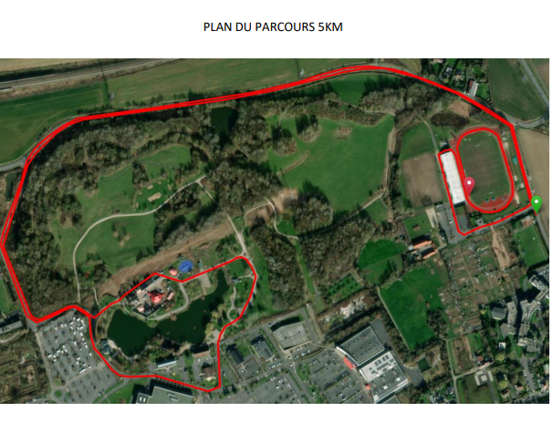

Quand Lomme Court
📅 Le 6 avril 2026

🏁 Départ au stade des Ormes à 10h
Deux boucles de 5 km
Label Bronze, qualificatif Ch. de France
S'inscrire🏁 Départ au stade des Ormes à 9h
Une boucle de 5 km
Label Bronze, qualificatif Ch. de France
S'inscrireDépart au stade des Ormes
Départ à 9h
Parcours nature
Encadrée par des coachs certifiés
S'inscrireOrganisée par la Ville en collaboration avec l’ACSL (Association des Clubs Sportifs Lommois), cette course sur route est conçue autour de l’épreuve phare : la course des 10 kms individuel et handisport (2 tours de 5 kms) qualificative pour les championnats de France.
Les coureurs occasionnels pourront s’essayer à la course des 5 kms individuel-couple-handisport (parcours d’1 tour identique à celui des 10kms) tandis que les passionnés de marche nordique et de randonnée plongeront au cœur du Parc Naturel Urbain. Ces deux dernières courses s’effectueront en allure libre et sans pression puisqu’il n’y aura pas de classement à l’arrivée.
Les enfants pourront participer à la traditionnelle course enfant d’1,5 kms et les plus petits, seront attendus au Stade des Ormes pour se défouler sur 500m en marchant ou en courant !
Voici le plan des différentes courses et parkings :
Parcours du 10 km :
Parcours du 5 km :
